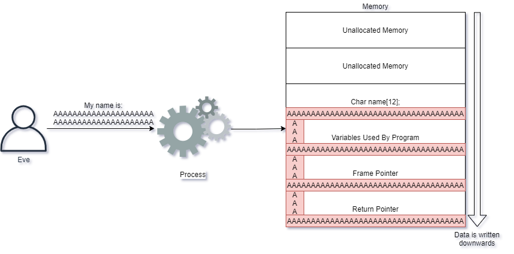

Кибербезопасность. Сетевые атаки
Сетевые атаки
Атаки на протоколы и приложения, размещенные в Сети, многочисленны. Веб-приложения рассматриваются в отдельном разделе этого курса.
Сервисы могут иметь изначальные ошибки, позволяющие злоумышленникам использовать их. Эти атаки обычно включают использование специальных инструкций для операционной системы через уязвимую службу, чтобы взять под контроль процесс, управляющий сетевой службой. Переполнение буфера - это категория таких атак.
Сеть обычно содержит множество приложений, некоторые из которых содержат простые учётные записи, а другие - со сложной функциональностью. Один из способов получить общее представление о поверхности атаки, а также наметить уязвимости, которые легко использовать, - это сканирование портов всех активов в целевой среде, а затем их снимки экрана.
Такие инструменты, как EyeWitness (Глаз-свидетель) (https://github.com/FortyNorthSecurity/EyeWitness), позволяют это сделать. Инструмент позволяет нам быстро получить представление о том, какие активы представлены в сети, а затем предоставляет снимки экрана (скриншоты) для каждой службы. Имея снимки экрана, мы можем легко посмотреть и быстро оценить, какие системы нам следует рассмотреть поближе.
Использование сервиса означает злоупотребление сервисом не по назначению. Часто эта эксплуатационная деятельность означает, что злоумышленники могут запускать свой собственный код, это называется RCE ("Remote Code Execution" - "Удаленное выполнение кода").
Переполнение буфера
Эксплуатация сетевых служб иногда включает злоупотребление функциями управления памятью приложения. Управление памятью? Да, приложениям необходимо перемещать данные в памяти компьютера, чтобы приложение работало. Когда языки программирования предоставляют разработчику контроль над памятью, могут возникнуть проблемы, подобные переполнению буфера. Существует много подобных уязвимостей, и в этом разделе мы рассмотрим переполнение буфера.
Язык программирования C и C++ позволяет разработчикам полностью контролировать управление памятью. Это идеально подходит для приложений, которые требуют от разработчиков очень близкого программирования к оборудованию, но при этом открыты для уязвимостей. Такие языки программирования, как Java, JavaScript, C#, Ruby, Python и другие не позволяют разработчикам допускать подобные ошибки, что снижает вероятность переполнения буфера в приложениях, написанных на этих языках.
Переполнение буфера происходит, когда необработанный ввод помещается в переменные. Эти переменные представлены в операционной системе через структуру памяти, называемую стеком. Затем злоумышленник может перезаписать часть стека, называемую указателем возврата.
Указатель возврата определяет, где CPU ("Central Processing Unit" - "Центральный процессор компьютера") должен выполнять код следующим. ЦП просто контролирует, какие инструкции система должна выполнять в любой момент. Указатель возврата - это просто адрес в памяти, по которому должно произойти выполнение. ЦП всегда нужно указывать, где выполнять код, и это то, что ему позволяет делать указатель возврата.
Когда злоумышленник может контролировать указатель возврата, это означает, что злоумышленник может контролировать, какие инструкции должен выполнять ЦП!
Например, рассмотрим следующий пример кода C (не беспокойтесь, вам не обязательно быть разработчиком C, но постарайтесь понять, что делает это простое приложение):
#include <string.h>
void storeName (char *input) {
char name[12];
strcpy(name, input);
}
int main (int argc, char **argv) {
storeName(argv[1]);
return 0;
}
Во многих языках программирования, включая C, приложение запускается в функции, называемой main. Это указано в приведенном выше коде, где указано int main (int argc, char **argv) {. В фигурных скобках {and} программа просто запускает функцию с именем storeName (argv[1]);. Она просто примет всё, что пользователь ввёл в программу, и предоставит это функции storeName.
В приложении 11 строк кода, но обратите внимание на строку, которая читает strcpy(name, input);. Это функция, которая пытается скопировать текст из ввода в переменную с именем name. Имя может содержать не более 12 символов, как указано в строке char name[12];. Есть ли в коде место, которое препятствует тому, чтобы указанное имя было длиннее 12 символов? Переменная name предоставляется пользователем, который использует приложение, и передается непосредственно в функцию storeName.
В этом приложении нет очистки или дезинфекции, чтобы убедиться, что длина входных данных соответствует ожиданиям приложения. Любой, кто запускает программу, может легко ввести значение, превышающее максимальное значение переменной name. Переменная name содержит 12 символов, но что произойдет, если ЦП прикажут записать более 12 символов? Он просто выполнит то, что было сказано, перезаписав столько памяти, сколько потребуется!
При попытке записи значения, превышающего ожидаемое, ЦП все равно будет пытаться записать это значение в память. Это фактически заставляет ЦП перезаписывать другие данные в памяти, например, указатель возврата, позволяющий злоумышленникам управлять ЦП. Опять же, если злоумышленник может перезаписать указатель возврата и управлять им, он контролирует, какой код должен выполнять ЦП.
Графический пример показывает, как Алиса записывает своё имя в приложение, которое мы использовали в примере выше:

Алиса ведёт себя хорошо и даёт имя, которое заставляет приложение вести себя должным образом. Она сообщает своё имя Алиса, и оно просто записывается в память приложения.
Однако Ева отправляет в приложение слишком много символов. Что тогда происходит? ЦП эффективно принимает её входные данные и записывает их в память, а также перезаписывает другие существующие значения!

Ввод Евы заставил ЦП записать гораздо больше данных, чем ожидало приложение, и это привело к перезаписи указателя возврата. Когда ЦП пытается выполнить следующую инструкцию, ему теперь предлагается выполнить код в местоположении AAAAAAA...
Если бы Ева взяла на себя управление этим сервером, вместо того, чтобы писать A, ей пришлось бы вместо этого предоставить код, который ЦП может понять в памяти. Затем она заставит указатель возврата иметь значение, которое говорит ЦП выполнить собственный код ЦП Евы.
Сканеры уязвимостей
Сканер уязвимостей автоматически ищет распространенные уязвимости в программном обеспечении и конфигурациях в сети. Он не предназначен для поиска новых классов уязвимостей, но вместо этого использует список предопределенных плагинов (или модулей) для сканирования служб на предмет проблем и уязвимостей. Необязательно искать уязвимости нулевого дня! Уязвимость нулевого дня - это совершенно новая уязвимость, о которой ранее не знали ни поставщик программного обеспечения, ни защитники; для уязвимости нулевого дня в настоящее время не существует известных исправлений проблемы.
Сканеры имеют функции сетевого сопоставления и сканирования портов, включая способы исследования и поиска уязвимостей в различных приложениях, с которыми они сталкиваются.
Сканер уязвимостей часто поддерживает конфигурацию с учётными данными, что позволяет ему входить в систему и оценивать уязвимости вместо того, чтобы находить их с неавторизованной точки зрения.
Выполнение кода
Когда злоумышленники обнаруживают уязвимость, которую они могут использовать, им необходимо решить, какую полезную нагрузку они хотят запустить. Полезная нагрузка - это код, который злоумышленник хочет доставить с помощью эксплойта.
Злоумышленник может решить использовать множество различных полезных данных. Вот несколько примеров:
- Заставить жертву зарегистрироваться на сервере C2 (""Command and Control" - "Командование и контроль"), принимающем команды от злоумышленников.
- Создайте новую учетную запись пользователя бэкдора в системе, чтобы злоумышленник мог использовать её позже.
- Откройте GUI ("Graphical User Interface" - "Графический Интерфейс Пользователя") с жертвой, чтобы злоумышленник мог удалённо управлять ею.
- Получите терминал командной строки, оболочку, через которую злоумышленник может отправлять команды.
Обычно злоумышленники используют bind-shell. Это заставляет жертву прослушивать порт, и когда злоумышленник подключается, они получают оболочку.
Файерволы помогают предотвратить подключение злоумышленников к жертвам. Файервол будет эффективно отклонять входящие соединения с жертвой, пока порт не разрешен. Только одно приложение может прослушивать порт, поэтому злоумышленники не могут прослушивать порты, которые уже используются, если они не отключат эту службу.
Чтобы обойти эту защитную меру, злоумышленники вместо этого попытаются заставить жертву подключиться к злоумышленнику, заставляя жертву предоставить доступ к полезной нагрузке. К сожалению, многие файерволы (брандмауэры) не настроены для запрета исходящего трафика, что делает эту атаку очень реальной для злоумышленников.
В этом примере мы видим, как злоумышленник использует обратную оболочку, чтобы заставить жертву подключиться к злоумышленнику.
Сетевой мониторинг
Злоумышленникам в большинстве случаев требуется, чтобы сеть удаленно контролировала цель. Когда злоумышленники могут удаленно контролировать цель, это осуществляется через канал управления и контроля (Command and Control), часто называемый C&C или C2.
Существуют компромиссы с помощью вредоносного ПО, которое заранее запрограммировано с полезными нагрузками, которым не нужен C2. Вредоносные программы такого типа способны взломать даже сети с воздушным зазором.
Обнаружение компрометации часто может быть выполнено путем обнаружения канала C2. C2 может принимать любую форму, например:
- Использование HTTPS для связи с серверами злоумышленников. Это делает C2 похожим на просмотр сети
- Использование социальных сетей для автоматической публикации и чтения сообщений
- Такие системы, как Google Docs, для добавления и редактирования команд жертвам
Только изобретательность атакующего устанавливает предел для C2. При рассмотрении того, как остановить злоумышленников с помощью умных каналов C2, мы часто должны полагаться на обнаружение статистических аномалий и расхождений в сети. Например, инструменты сетевого мониторинга могут обнаруживать:
- Длинные соединения, используемые C2, что неестественно для рассматриваемого протокола. HTTP - один из тех протоколов, где длинные соединения не очень распространены, но злоумышленник, использующий его для удаленного управления, может его применять.
- Маяки, используемые C2, чтобы указать, что жертва жива и готова к командам. Маяки используются многими видами программного обеспечения, не только злоумышленниками, но знание того, какие маяки существуют и чего вы ожидаете, является хорошей практикой.
- Из сети внезапно появляются вспышки данных. Это может указывать на большую загрузку из приложения или на кражу данных злоумышленником. Попытайтесь понять, какое приложение и пользователь вызывает появление вспышек данных, и примените к ним контекст. Это нормально или нет?
Есть много способов, которыми защитники могут попытаться найти аномалии. Эти аномалии следует дополнительно сопоставить с данными из исходной системы, отправляющей данные.
Для мониторинга сети следует применять контекст, чтобы определить шум по сигналу. Это означает, что SOC ("Security Operations Center - "Центр управления безопасностью") должен попытаться дополнить данные, например IP-адреса источника и назначения, контекстом, чтобы сделать данные более ценными.
Применение контекста можно описать следующим образом: атака приходит из Интернета, но пытается использовать уязвимость Linux в службе Windows. Обычно это рассматривается как шум, и его можно безопасно игнорировать; разве что, если IP-адрес, выполняющий атаку, является IP-адресом вашей собственной сети или провайдера, которому вы доверяете? Контекст, который мы можем применить, может дать ценную информацию о том, как мы исследуем атаку дальше. В конце концов, мы не хотим, чтобы системы, которым мы доверяли, запускали какие-либо атаки!
Peer to peer traffic - Одноранговый трафик
Большинство сетей настроены по принципу "клиент-сервер". Клиент получает доступ к серверам для получения информации, и когда клиентам необходимо взаимодействовать друг с другом, они обычно делают это через сервер.
Однако злоумышленник, скорее всего, захочет использовать одноранговую связь, то есть связь от клиента к клиенту, чтобы использовать низко висящие плоды, такие как повторное использование учетных данных или использование слабых или уязвимых клиентов.
Например, порт 445, используемый SMB, является хорошим индикатором для обнаружения взлома. Клиенты не должны общаться друг с другом через SMB в большинстве сред, однако во время компрометации злоумышленник, скорее всего, попытается использовать SMB для дальнейшей компрометации систем.
Боковое движение и поворот
После взлома системы злоумышленник может использовать эту систему для исследования дополнительных сетей, к которым у взломанной системы есть доступ. Это было бы возможно в среде, где скомпрометированная система имеет больше привилегий через файервол или система имеет доступ к другим сетям, например, через дополнительную сетевую карту.
Поворот означает, что злоумышленник использует взломанный хост для доступа в другие сети. Здесь показана иллюстрация этого, где Ева взломала одну систему и использует её для сканирования и обнаружения других:
Боковое движение - это действие, в котором используется поворотная точка и другая система с её помощью. Эту новую систему теперь можно использовать для поворотов и боковых движений. Ева в этом примере использует Сервер X для дальнейшего обнаружения Системы B.